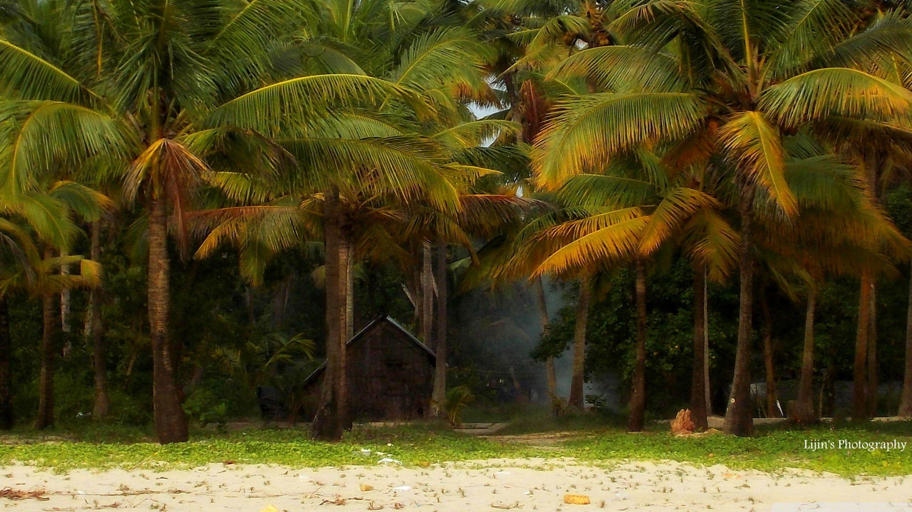
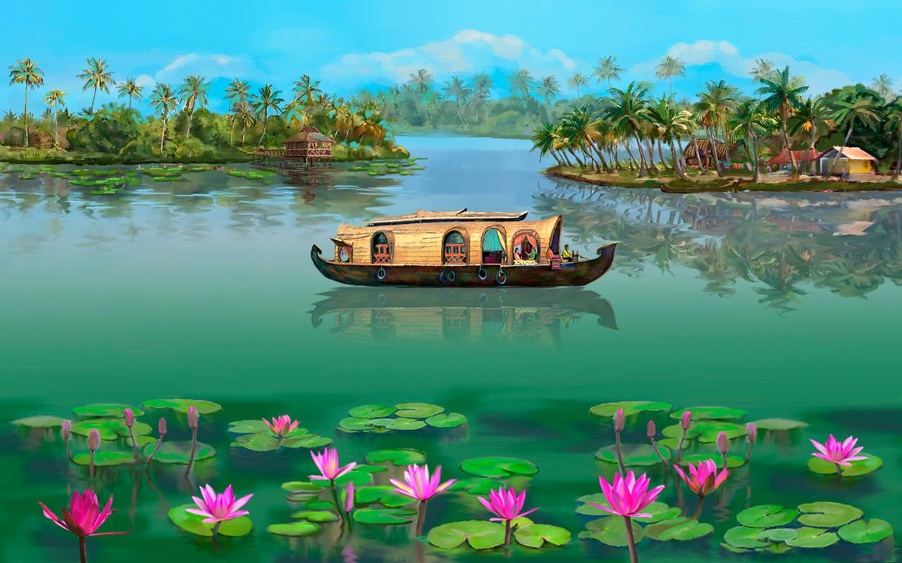
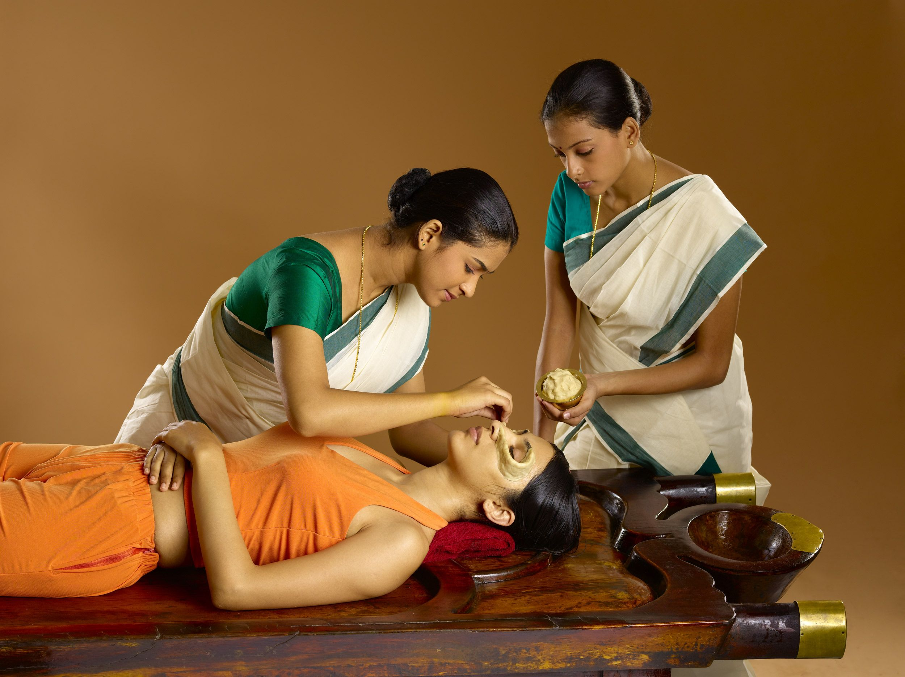
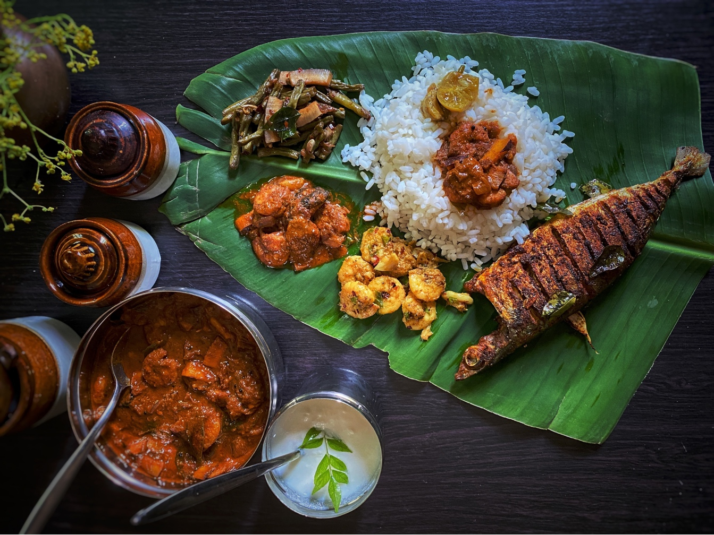
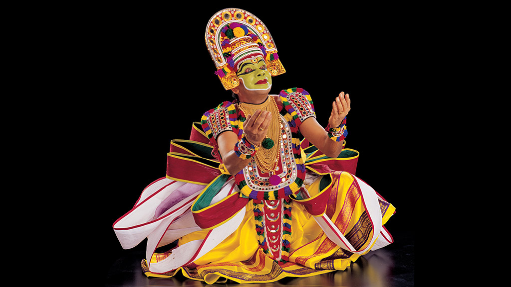

God’s own country - Kerala

God’s own country - Kerala

God’s own country - Kerala

Ayurveda
In the forests of Kerala, India, our birthplace, the original Ayurvedic tradition lives on. Kerala Ayurveda practices a pure form of Ayurveda, remaining true to the Vedic texts written over 5,000 years ago.

Cuisine
Spices have always played an integral part of Kerala's history. Our food is an example of the very same and we have offerings for people from all over the world.

Art Forms
Kerala has birthed and nurtured a plethora of art forms over a thousand years. Our shores have watched them evolve and flourish in various shapes and forms.